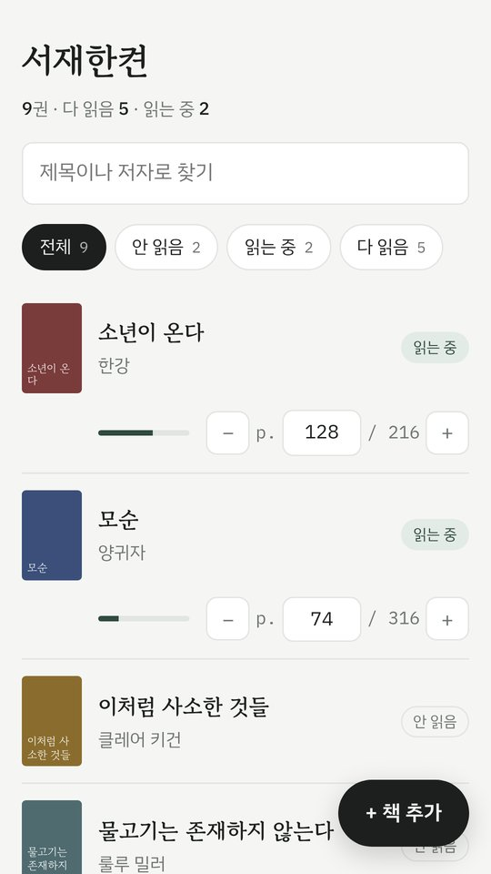
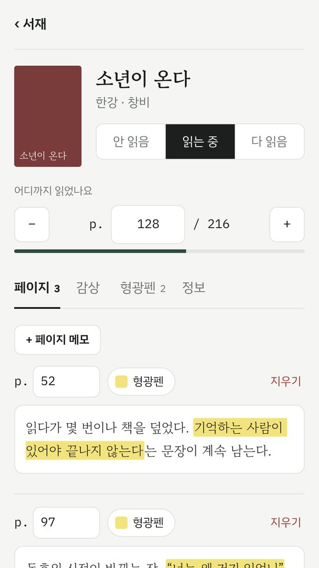
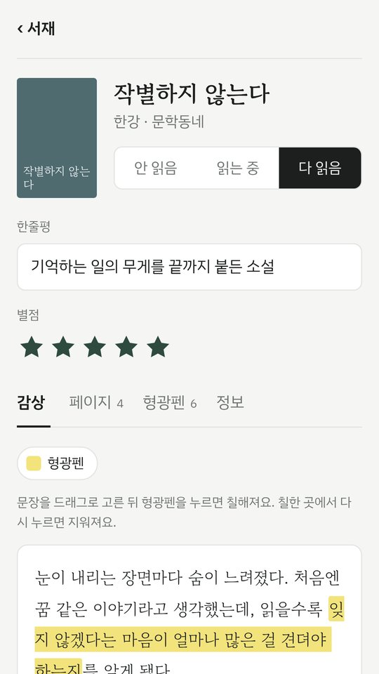
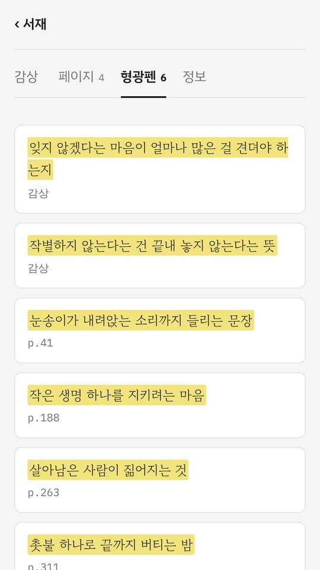

서재한켠
가진 책, 읽은 책, 마음에 남은 문장까지.
한 줄씩 가볍게 남기는 독서 기록.




내 서재
표지를 찍거나 앨범에서 골라 책을 꽂아요. 비스듬히 찍어도 반듯하게 펴서 표지로 써요.
읽는 중
목록에서 바로 읽은 쪽수를 고치고, 남기고 싶은 쪽에 메모를 붙여요.
다 읽은 뒤
'다 읽음'을 누르면 한줄평부터 남기게 안내해요. 길게 쓰고 싶은 날엔 감상을 통으로 써요.
형광펜
감상과 메모에서 문장을 골라 칠하면, 어디서 칠했는지와 함께 한곳에 모여요.
내 기록은 내 폰에
로그인도 서버도 없어요. 모든 기록은 폰 안에만 저장되고, 원할 때 파일로 내보내 보관할 수 있어요.
자세한 내용은 개인정보처리방침에 있어요.